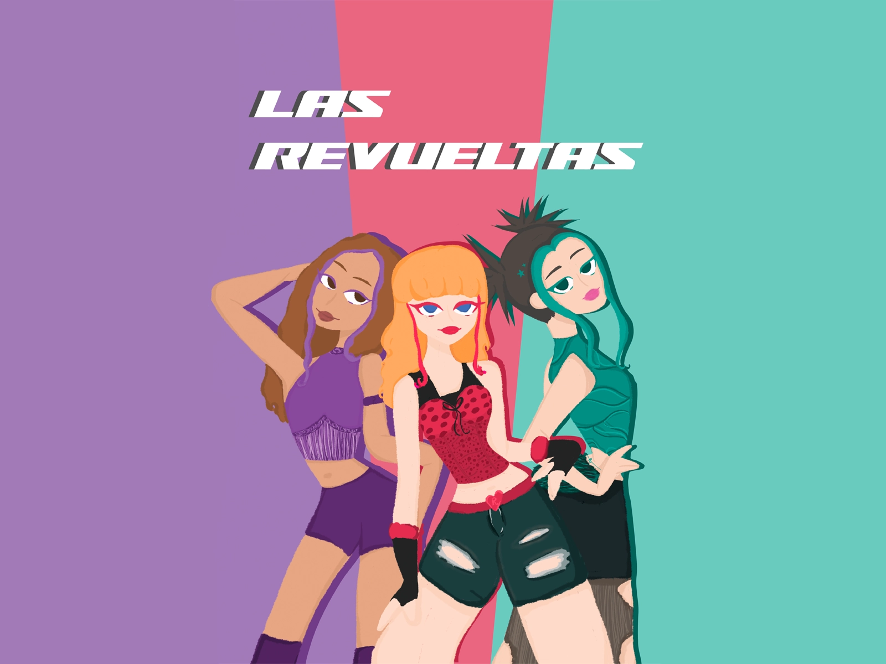
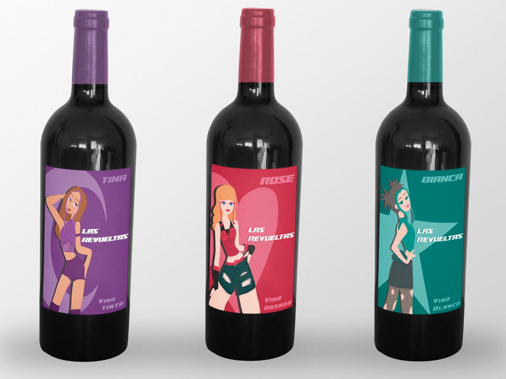
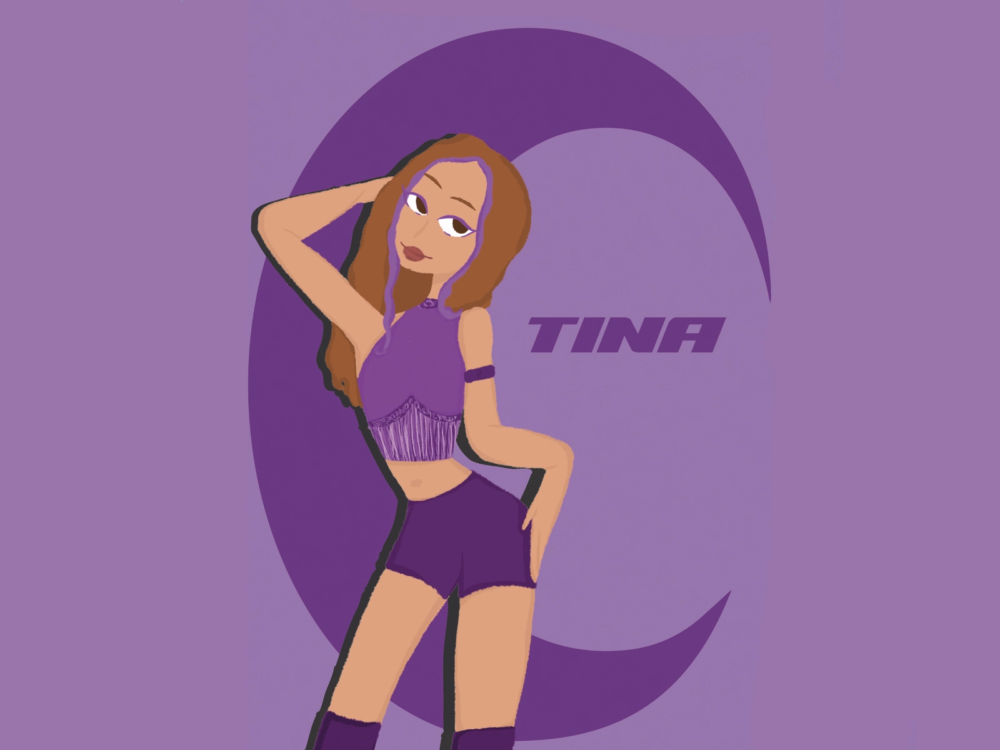
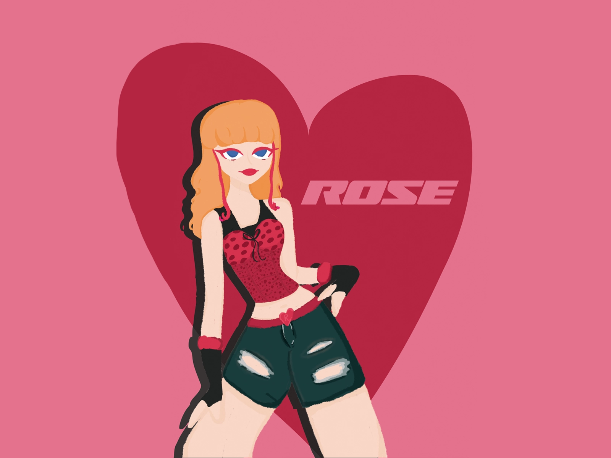
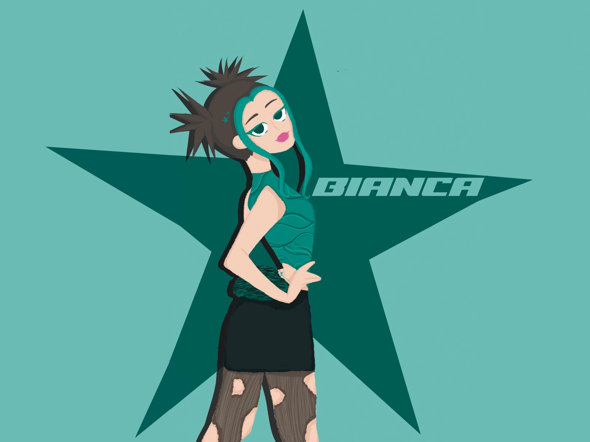
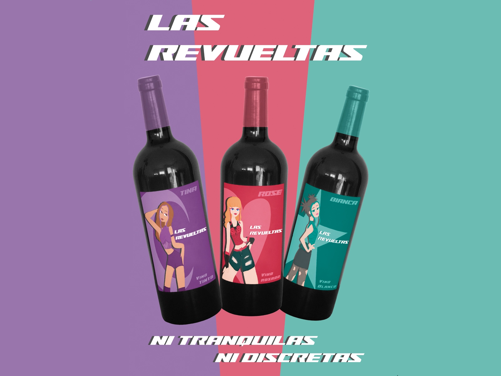
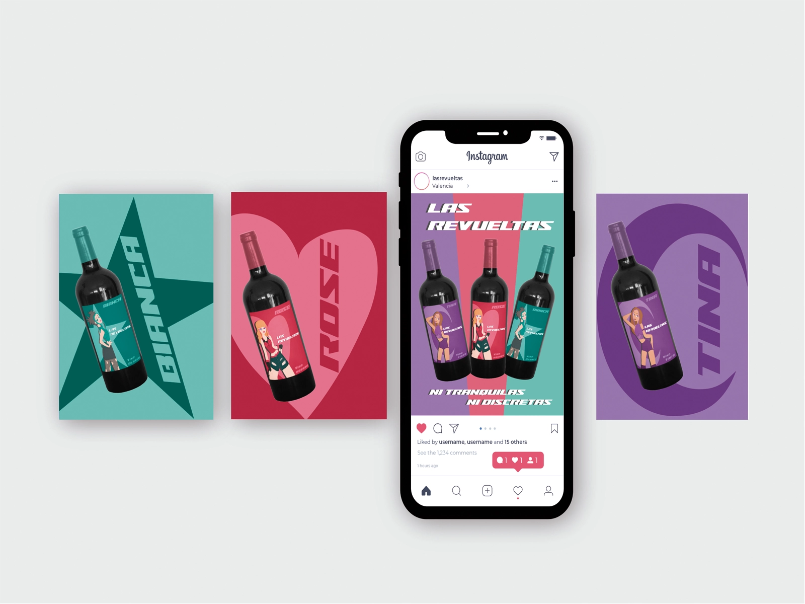

LAS REVUELTAS

Las Revueltas is a collection of low-alcohol young wines featuring three varieties: white, red, and rosé.The project conveys a fresh and youthful identity through the illustrated portrayal of three friends sharing joyful moments, symbolizing connection, spontaneity, and companionship.The visual identity is supported by an integrated advertising campaign and a social media strategy aimed at strengthening brand presence, while consistently promoting responsible consumption.






